One requirement, from intake to shipped.
A video tour of the OMS delivery pipeline example — every screen and every artifact, shown running in the composer.
The full walkthrough — ~4 min, seven chapters. Each section below has its own shorter clip and a written explanation. Every frame is captured live from the running UI.
What you're looking at
The example runs a single order-management requirement through the whole software lifecycle — intake, design, human sign-off, build, and system-integration test — with real governance: a design gate a judge scores and two human leads must approve, integration contracts that serialise conflicting work, and a saga that survives duplicate webhooks, dropped events, contention, and cancellation.
Base runtime, or just this example?
A fair question while reading this: which of these are SwarmKit, and which are the demo? The artifact kinds are all part of the runtime + schema base — including Funnel, StageGraph, and Contract. Each has a canonical JSON Schema, a resolver in the runtime, a swarmkit serve endpoint, and an auto-generated composer form. This example only authors instances of them.
- Topology · Archetype · Skill — the core mental model.
- RoleRegistry · ApprovalPolicy — human identity + approval rules.
- Funnel — the reusable quality gate.
- StageGraph — the pipeline-as-data spec.
- Contract — the lock vocabulary. Not custom to this example.
- Trigger · ExecutorAdapter — ingress + executor kinds.
- The instances — the OMS topologies,
oms-pipeline,oms-design-gate, and the two contracts. - The pipeline controller (
examples/sdlc-pipeline/controller/) and the Temporal orchestrator — application code that implements the runtime'sOrchestrationProviderseam. SwarmKit provides the StageGraph spec, the governed stage runs, and the correlated audit; the durable saga substrate is the app's.
Each chapter below opens one part of the composer, explains what it achieves, and shows it running.
The swarms, as data
Achieves: a whole delivery org — agents, roles, and who-delegates-to-whom — authored and inspected as files, with four ways to see the same topology.
A topology is a swarm: agents with roles, wired into a delegation tree. Opening one in the Composer gives you four views of the same document — Structure (the org chart), Relationships (a parent and its children), Network (the flat communication graph), and Canvas (an editable node-graph). Click any agent to see its resolved detail — archetype, model, IAM scopes — and its raw YAML.
Opening oms-stage-run, walking its four views, then drilling into the designer agent and its YAML.
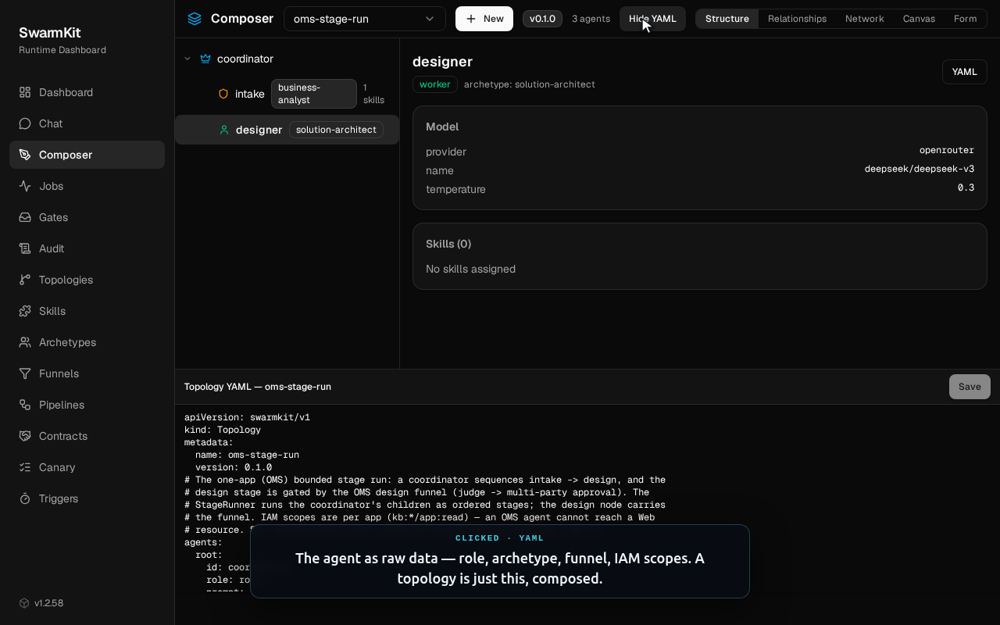
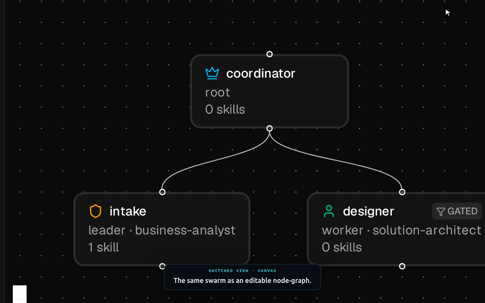
Reusable agent templates
Achieves: define an agent once — role, executor, default skills — and reuse it across topologies; choose per archetype whether it thinks (model) or works a repo (harness).
An archetype is a template an agent instantiates. The interesting choice it captures is the executor. Most archetypes are model executors — they reason and return an artifact. Three (developer, architect-reviewer, security-consultant) are harness executors: they run a coding harness — a session that reads a repo and produces a diff — not a single model call. That distinction is one line of data on the archetype, not a code branch.
Opening developer (a harness executor) and business-analyst (a model executor), in both the form and the YAML.
executor:
kind: harness # a session-holding, diff-producing coding harness…
ref: claude-code # …resolved from the bundled adapter library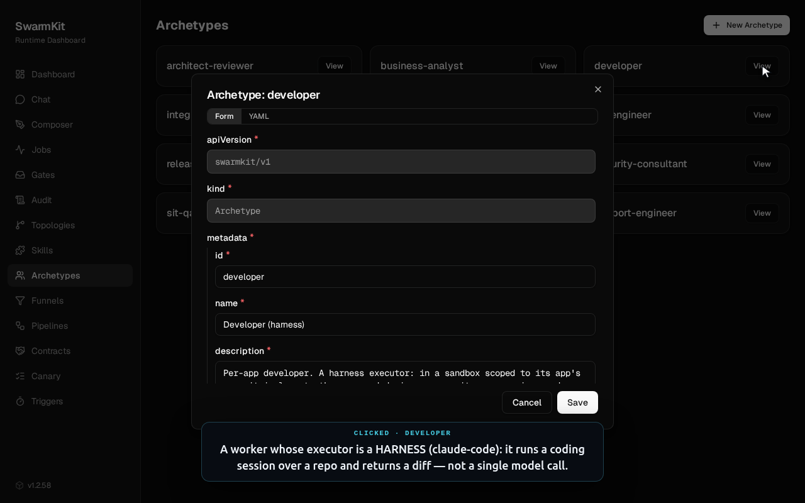
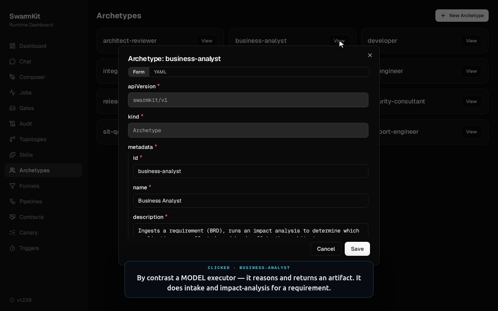
The one extension primitive
Achieves: every capability an agent gains — a tool, a judgement, a coordination step, a memory — is expressed through one mental model instead of many parallel mechanisms.
SwarmKit has a single way to extend a swarm: the skill, tagged with a category — capability, decision, coordination, or persistence. The SDLC workspace ships eight. A decision skill like artifact-judge scores an artifact against a rubric and returns a verdict — a funnel's judge layer calls exactly this. A coordination skill like multi-party-approval-request gathers sign-offs from several human parties — which is what a funnel's approve layer runs.
Opening artifact-judge (a decision skill) and multi-party-approval-request (a coordination skill).
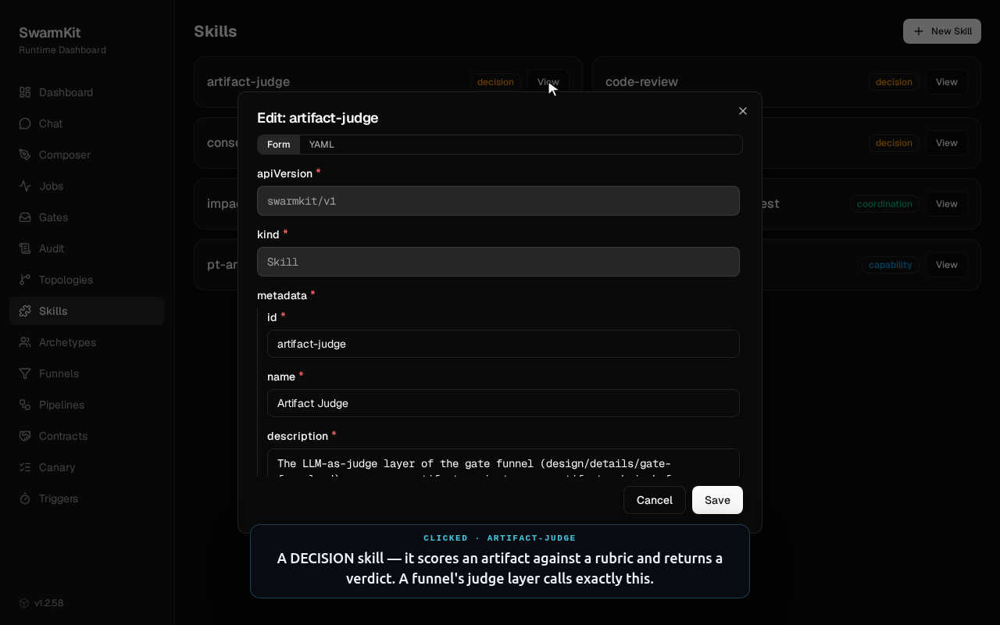
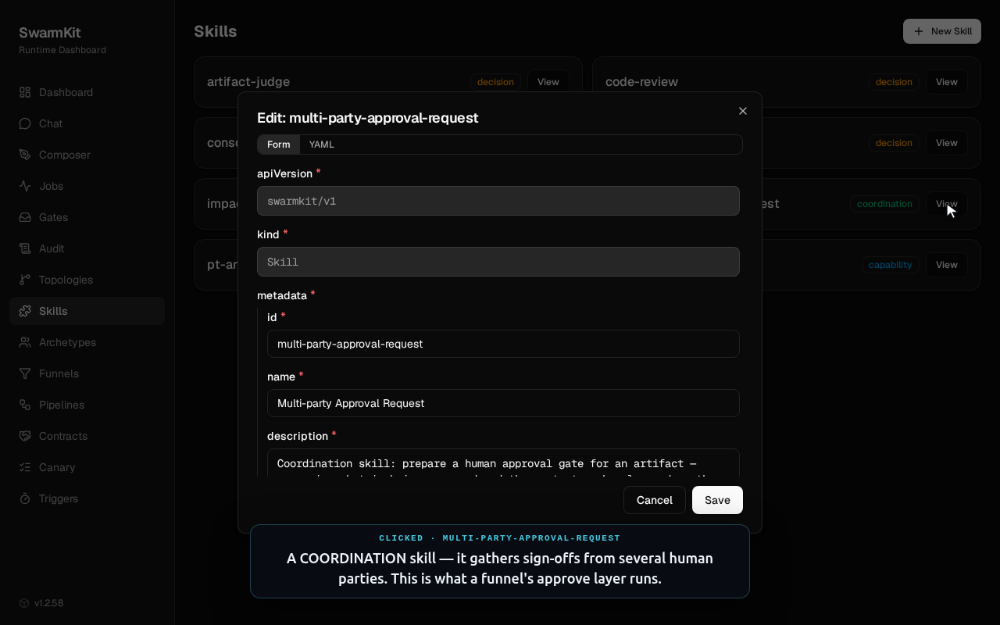
Quality gates as data
Achieves: a reusable, four-layer approval gate with a structural guarantee — nothing reaches "done" except a human sign-off.
A funnel is a first-class gate artifact. It chains up to four layers over an artifact — deterministic validate, an LLM-as-judge judge, an investigative harness review, and a multi-party human approve — and there is exactly one way out: the approve layer. The compiler enforces that invariant; you cannot wire a funnel whose judge or review can reach the terminal on its own. Because it's referenced by id, the same gate can guard any stage in any pipeline.
The four-layer gate on the canvas, selecting the judge layer, and the terminal approve layer up close.
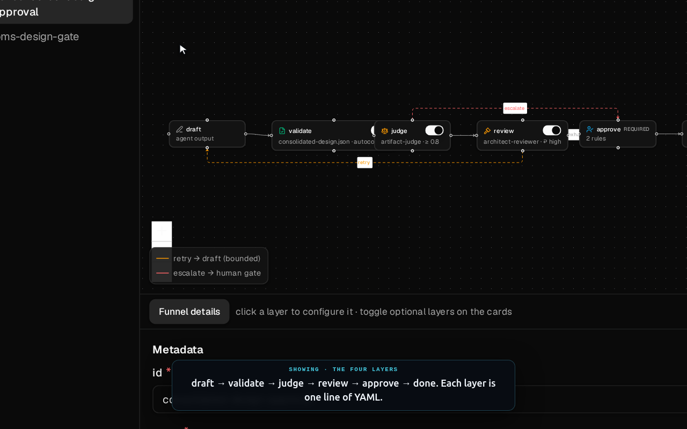
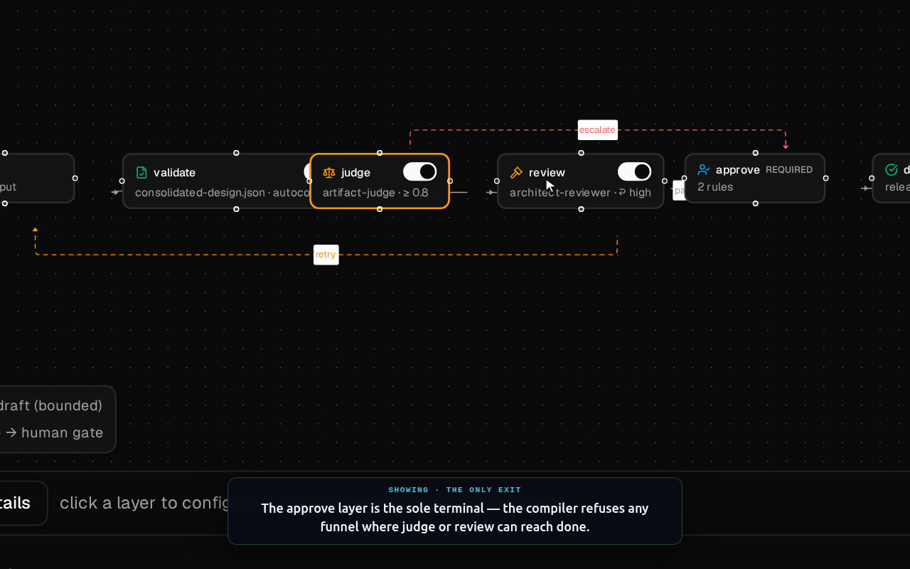
The delivery pipeline as a StageGraph
Achieves: the whole intake→design→build→sit journey authored as one data file, sequenced by a durable saga that handles gates, contract locks, external events, defect loops, and cancellation.
A StageGraph wires stages by the events that enter and leave them. The design stage holds two contract locks and blocks on a gate; build's success is a genuinely external event — a CI webhook. The editor draws it on a canvas: hover a stage or an edge for a × to remove it, drop topologies from the palette, and configure each stage through a form generated from the schema — where topology, gate, and locks are pickers over real workspace values, not free text.
The StageGraph canvas, the design stage up close, edit mode with hover-delete, the schema form, and the ref dropdown.
stages:
- id: design
topology: oms-design
when: [design.kickoff]
locks: [oms-inventory, oms-web] # all-or-none, held across approval
gate: oms-design-gate
success: design.approved
release_locks_on: design.approved
compensation: oms-compensate-design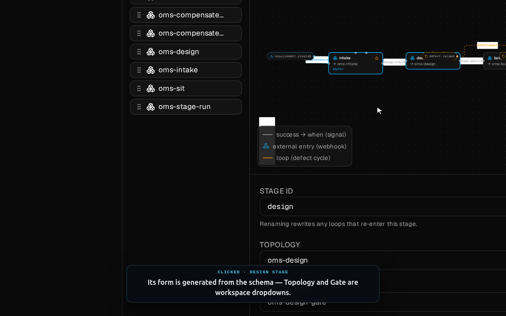
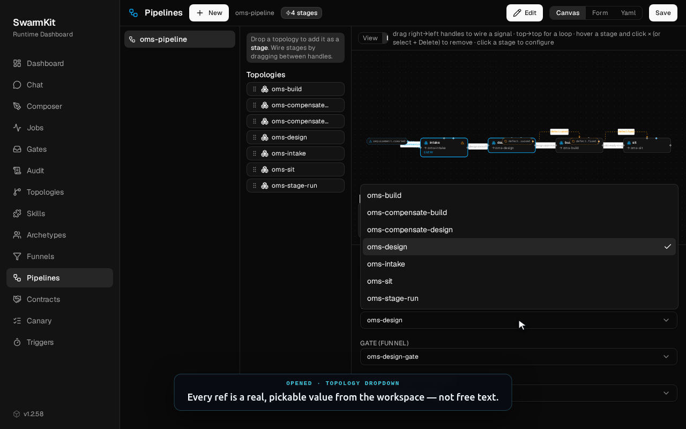
The saga, running
The reference controller sequences a requirement across those stages and survives everything the real world throws at it. This is the actual output of just demo-pipeline-controller — two requirements, a duplicate webhook, a dropped event, a contract collision, and a cancellation:
STEP 1 — OMS-101 enters (intake → design parks on the gate) OMS-101 status=parked pending_gate=oms-design-gate locks=['oms-inventory','oms-web'] STEP 3 — OMS-102 arrives, contends on the same contract OMS-102 status=parked (contract held by OMS-101 → serialised) STEP 4 — OMS-101 gate APPROVED → contract released → OMS-102 resumes OMS-101 status=active locks=[] (advanced to build) STEP 6 — OMS-101's 'build.ready-in-qa' webhook was DROPPED; reconciliation recovers OMS-101 status=done passed=['intake','design','build','sit'] STEP 7 — OMS-102 withdrawn mid-pipeline → compensations run in reverse OMS-102 status=cancelled ✓ pipeline-controller demo complete
design/details/orchestration-provider-seam.md.What the locks actually are
Achieves: turns a pipeline's abstract "locks" into a real, checked vocabulary — so two requirements touching the same integration interface can never design concurrently.
The design stage holds locks: [oms-inventory, oms-web]. Those aren't free strings — each is a Contract: a first-class artifact naming an integration interface and the apps it binds. Making locks real means a typo can't silently fail to serialise two requirements. Locks are acquired all-or-none in a fixed order (no deadlock), held across the approval, and released on design.approved; a second requirement that wants a held contract simply parks and resumes.
Opening oms-web and oms-inventory — the two contracts the design stage holds at once.
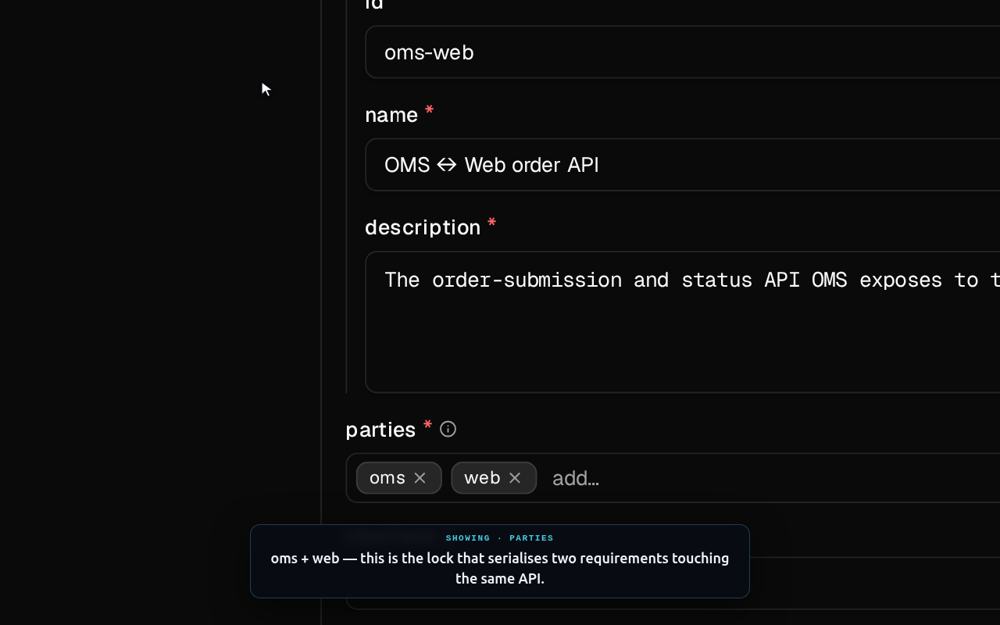
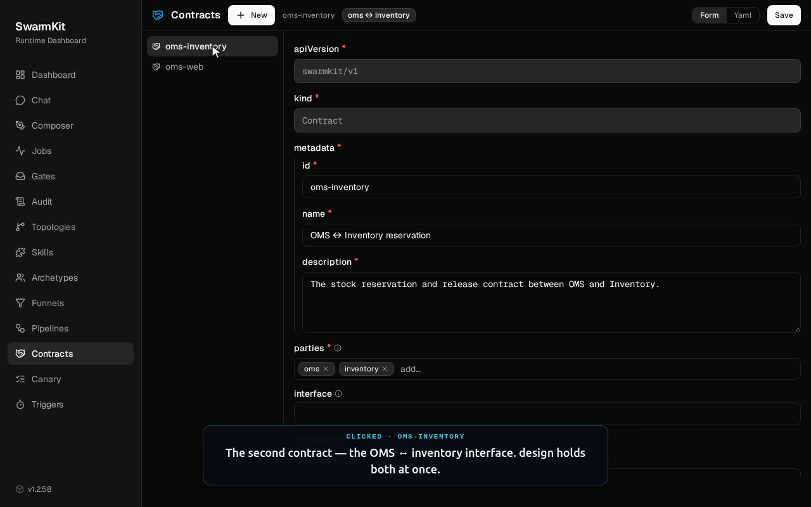
The flow, actually running
Achieves: the determination-only shape in motion — a real requirement sequenced by a coordinator, delegated to a worker that produces real design artifacts, ending in a governed approval request.
Everything above is the authoring surface. This is a real run — swarmkit run oms-stage-run against live models (openrouter/gpt-4o-mini), not a mock. Watch how the flow happens: the coordinator reads the requirement, builds a scope and a 3-task plan, and delegates two design tasks to the designer worker in parallel. Each produces a genuine ~4 KB solution design; the coordinator then reads both results and fires a multi-party-approval-request. Agents produce artifacts and verdicts — code sequences the work.
A faithful replay of a real run — plan → delegate → design ×2 → synthesize → approval, in ~14 s of agent time.
The artifacts are real too. A single-agent stage (swarmkit run oms-intake) has the business-analyst call its impact-analysis skill and return a structured analysis. Here's an excerpt — the full artifacts this run produced are downloadable just below:
[intake] thinking… (gpt-4o-mini) [intake] calling impact-analysis → got results (403B) [intake] done (6.9s) ### Affected Applications - Order Management System (OMS) — new APIs for order submission + status. - Web Storefront — integrates with those APIs to submit and poll. ### Open Questions 1. Which applications are in scope for impact? 2. Are there architectural constraints on the new endpoints?
Download the artifacts this run produced
Actual model output, committed to the repo verbatim — the impact analysis, plus the two ~4 KB solution designs the designer worker generated in the flow above:
Try it yourself
Everything above is in the repo, and the demos are self-contained — they use fakes for the model and harness seams, so none of them need an API key or a running server.
just install # install both language workspaces just demo-sdlc # the bounded stage run + gate + an IAM-scope denial just demo-pipeline-controller # the pipeline saga: dup · drop · contend · cancel just demo-pipeline-temporal # the same pipeline on Temporal (in-process, no server) # the visual composer you just watched: uv run swarmkit serve examples/sdlc-pipeline/workspace --port 8000